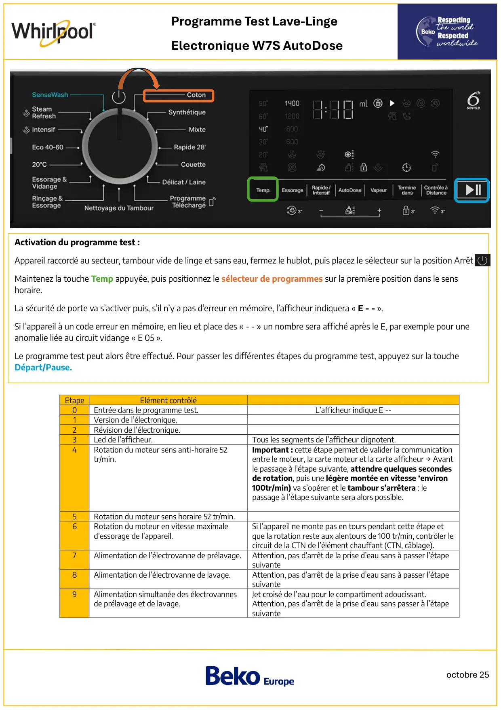
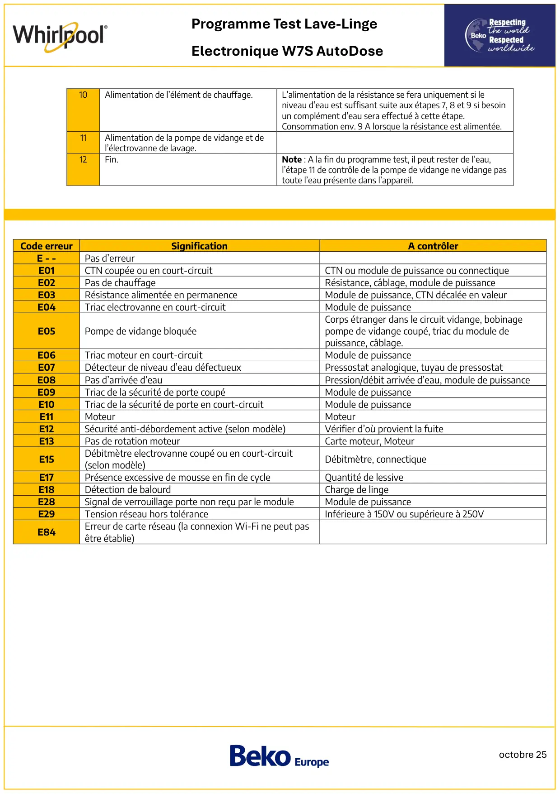

Prog Test lave linge Whirlpool Horizon ElecW7S Autodose

octobre 25Programme Test Lave-LingeElectronique W7S AutoDoseEtapeElément contrôlé0Entrée dans le programme test.L’afficheur indique E --1Version de l’électronique.2Révision de l’électronique.3Led de l’afficheur.Tous les segments de l’afficheur clignotent.4Rotation du moteur sens anti-horaire 52tr/min.Important : cette étape permet de valider la communicationentre le moteur, la carte moteur et la carte afficheur → Avantle passage à l’étape suivante, attendre quelques secondesde rotation, puis une légère montée en vitesse ‘environ100tr/min) va s’opérer et le tambour s’arrêtera : lepassage à l’étape suivante sera alors possible.5Rotation du moteur sens horaire 52 tr/min.6Rotation du moteur en vitesse maximaled’essorage de l’appareil.Si l’appareil ne monte pas en tours pendant cette étape etque la rotation reste aux alentours de 100 tr/min, contrôler lecircuit de la CTN de l’élément chauffant (CTN, câblage).7Alimentation de l’électrovanne de prélavage.Attention, pas d’arrêt de la prise d’eau sans à passer l’étapesuivante8Alimentation de l’électrovanne de lavage.Attention, pas d’arrêt de la prise d’eau sans à passer l’étapesuivante9Alimentation simultanée des électrovannesde prélavage et de lavage.Jet croisé de l’eau pour le compartiment adoucissant.Attention, pas d’arrêt de la prise d’eau sans passer à l’étapesuivanteActivation du programme test :Appareil raccordé au secteur, tambour vide de linge et sans eau, fermez le hublot, puis placez le sélecteur sur la position ArrêtMaintenez la touche Temp appuyée, puis positionnez le sélecteur de programmes sur la première position dans le senshoraire.La sécurité de porte va s’activer puis, s’il n’y a pas d’erreur en mémoire, l’afficheur indiquera « E - - ».Si l’appareil à un code erreur en mémoire, en lieu et place des « - - » un nombre sera affiché après le E, par exemple pour uneanomalie liée au circuit vidange « E 05 ».Le programme test peut alors être effectué. Pour passer les différentes étapes du programme test, appuyez sur la toucheDépart/Pause.
1 / 2
octobre 25Programme Test Lave-LingeElectronique W7S AutoDose10Alimentation de l’élément de chauffage.L’alimentation de la résistance se fera uniquement si leniveau d’eau est suffisant suite aux étapes 7, 8 et 9 si besoinun complément d’eau sera effectué à cette étape.Consommation env. 9 A lorsque la résistance est alimentée.11Alimentation de la pompe de vidange et del’électrovanne de lavage.12Fin.Note : A la fin du programme test, il peut rester de l’eau,l’étape 11 de contrôle de la pompe de vidange ne vidange pastoute l’eau présente dans l’appareil.Code erreurSignificationA contrôlerE - -Pas d’erreurE01CTN coupée ou en court-circuitCTN ou module de puissance ou connectiqueE02Pas de chauffageRésistance, câblage, module de puissanceE03Résistance alimentée en permanenceModule de puissance, CTN décalée en valeurE04Triac electrovanne en court-circuitModule de puissanceE05Pompe de vidange bloquéeCorps étranger dans le circuit vidange, bobinagepompe de vidange coupé, triac du module depuissance, câblage.E06Triac moteur en court-circuitModule de puissanceE07Détecteur de niveau d’eau défectueuxPressostat analogique, tuyau de pressostatE08Pas d’arrivée d’eauPression/débit arrivée d’eau, module de puissanceE09Triac de la sécurité de porte coupéModule de puissanceE10Triac de la sécurité de porte en court-circuitModule de puissanceE11MoteurMoteurE12Sécurité anti-débordement active (selon modèle)Vérifier d’où provient la fuiteE13Pas de rotation moteurCarte moteur, MoteurE15Débitmètre electrovanne coupé ou en court-circuit(selon modèle)Débitmètre, connectiqueE17Présence excessive de mousse en fin de cycleQuantité de lessiveE18Détection de balourdCharge de lingeE28Signal de verrouillage porte non reçu par le moduleModule de puissanceE29Tension réseau hors toléranceInférieure à 150V ou supérieure à 250VE84Erreur de carte réseau (la connexion Wi-Fi ne peut pasêtre établie)
2 / 2